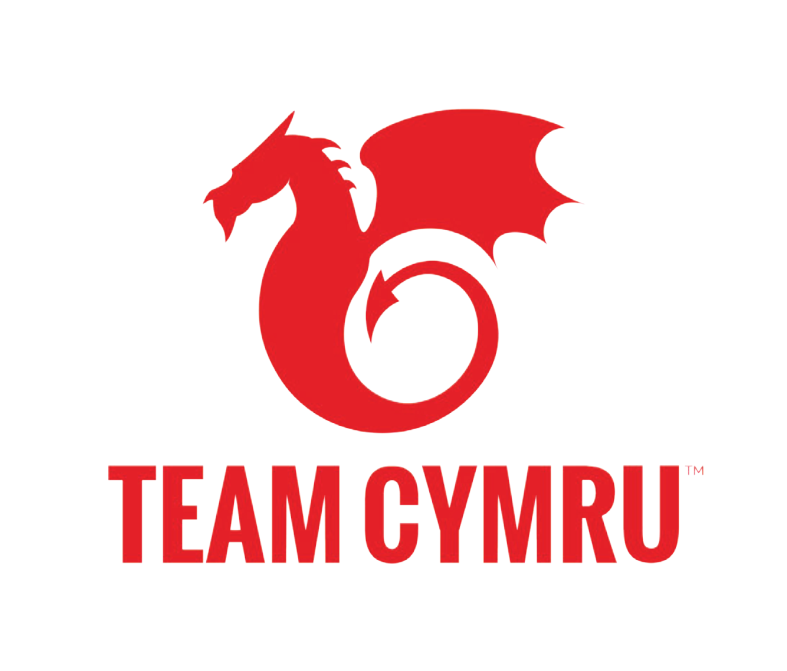

Selected work
Three doors into the work: research, product design, and the production craft that came before either. Pick whichever pulls you in.

Research
Generative and evaluative studies for product teams to iterate on.

Product Design
Product work spanning discovery and wireframing through to shipped redesigns and training systems.

Other work
3D, video animation, and a decade of production craft in entertainment and defense.
Featured stories

ER Access Timing
Participant timing sessions and journey mapping that exposed where a bedside onboarding flow created nurse dependency instead of patient independence.

Why Patients Call
Transcript analysis that rebuilt inconsistent support tags into a clearer read on why patients were calling and where the experience was failing.

Team Cymru Brand System
A company rebrand with a simplified dragon mark, production-ready guidelines, and product identities that made the system easier to use at scale.

The Connect Records Study
A three-variant prototype study that tested whether clearer design could reduce confusion, make the task easier to trust, and lower support demand.

Hope 3.0 Chatbot Evaluation
Moderated think-aloud sessions and survey work across high-volume chatbot tasks to identify where the experience broke trust.
Let’s talk.
If something here lines up with work you’re trying to do, I’d be glad to dig into it. The case studies are written to start a conversation, not finish one.